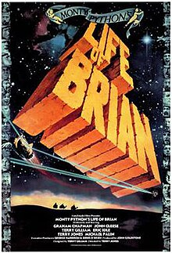

Course: Jesus in the Movies
Lecture #7: Life of Brian & Jesus (1979)
LIFE OF BRIAN -- A PARALLEL JESUS MOVIE

This is not a film about the life of Jesus, despite frequent and ugly rumors to the contrary. It should not be judged as something it was not intended to be. That being said, this movie should not be dismissed to quickly as it contains some revealing insights into our own individual, corporate, and cultural character.
I feel it is important to include in any discussion of Jesus on the screen because it has generated some of the most intense and serious discussion about the nature of the historical church and certain tendencies in the institutional church, or any institution for that matter.
The story is about a hapless fellow named Brian Cohen who has the great misfortune to be born in the manger right next to that of Jesus. From the beginning of his life, events seem to conspire to move Brian into the reluctant role of savior. He is not a replacement for Jesus, and Jesus even appears in the film and is not parodied.
The central point of the film is not a parody of Jesus, but serves as a caustic critique: First, a critique of the often pretentious and sanctimonious Hollywood style lives of Jesus; then, a critique of the institutional nature of the church, which includes the established institutional church as well as those sects who position themselves as over against the established institutional church. and finally, a critique of all those who uncritically follow leaders of any stripe.
This is really a tale of two saviors (actually more than that). Jesus himself, who appears as the commonly envisioned figure of traditional Christian piety against which our second protagonist is to be contrasted.
Brian then is the other who stands for the common man of the street. We learn that his father was a long-absent Roman centurion (a charge made about Jesus himself by the second century pagan author Celsus.) His mother is believed by his followers to be a virgin, though she herself refuses to address the issue "out of modesty".
Brian wants to be a good Jewish patriot so joins a local Jewish zealot group and works to harass Roman power. Brian certainly doesn't seek to become a leader. He has no desire to develop his own religious following. In fact, quite the opposite occurs. A religious movement finds him, and quickly his several followers request his words of guidance, seek signs and miracles, and ultimately offer adoration of his crucifixion as a symbol of his devotion to them and their cause of resistance against Rome.
These two figures, Jesus and Brian, are operative throughout the film. One mostly hidden in the background (Jesus), the other visible. Neither protagonist can truly be said to function as the central character of the film. The reality is that the movie is neither about Brian or Jesus. Rather, it is about us and the tradition of the institutional church.
It is about those people who once sought, and who now seek, teachers of wisdom in an effort to have their faith inspired and their salvation assured. It is about the hearers, not the speakers. The CONTENTION of the Monty Python troupe is repeatedly presented in one scene after another.
The HEARER is rarely merely a listener, but is instead a seeker who already brings the baggage of what he or she hopes to hear from any teacher. The result is that they hear exactly what they wish to find. In a real sense, this is an assertion that offers bold challenges to the church and its catalogue of beliefs and practices.
SOURCE MATERIALS
There are three biblical texts that the movie clearly makes use of. THE FIRST is the birth narratives of Luke and Matthew (combining the two). The two are not harmonized. The appearance of the Wise men (astrologers) at the home of the newborn babe is applied to the birth of Brian.
We observe that that the wise men are happy to praise the newborn Brian and to offer their gifts, despite the protestations of Brian's mother. In other words, they are determined to see and accept only what they believe to be true. When the wise men discover their error and reclaim their gifts to take to Jesus’ manger, surrounded by shepherds, we laugh at their mistake. but a new doubt is raised as their determination to worship Brian was every bit as sincere as their resolve to worship Jesus. It has to make us wonder about ourselves.
Show opening clip of Brians/Jesus birth and adoration. (scene 1: 4 min)
THE SECOND scenario is the setting for the Sermon on the mount. At first, we encounter these well-known teachings from up close but the camera pulls back and we are gradually pulled away from the speaker to the far edges of the scattered listeners. Again, focusing on the hearers. They misunderstand his words for peacemakers as "cheesemakers". The misunderstanding is funny on the surface but the physical fight that ensues over interpretation is classic, slapstick and ironic.
While Jesus speaks of blessings upon those who make peace, those who have come to hear him preach are engaged in violence over their own petty prejudices, interpretations and lack of tolerance toward one another. a parody of the history of the church.
Show this clip of the sermon on the mount (scene 3: 4 min)
THE THIRD scenario is the crucifixion at the conclusion of the film when we find Brian about to be crucified for his activities against Rome. His name even comes up as one to be released. These trial and cross episodes are broadly attested in scattered scenarios in the NT gospels by all are placed in the trial and crucifixion of Jesus. Monty Python uses Brian.
Here is perhaps the most immediate challenge to the church’s interpretation of the death of its messiah. For Brian, who has no desire to die, the forthcoming death is very real, unjust and tragic. It is made all the more so by the fact that his so-called friends and followers praise him for his actions; they interpret his death by their own vision, for their own needs.
The crowning moment in the entire charade is in the closing song -- "Always look on the bright side of life" which soon shifts to "always look on the bright side of death". For Brian, this situation is absurdly ludicrous. For his followers, the situation is wonderfully desirable--someone else is dying for their misdeeds!
It is desirable in the same sense that the early church needed some means, some lens, thru which to interpret and understand the tragic death of their Messiah, Jesus. The unanswered question is, of course: What was Jesus' actual view on the entire situation? and "Who is it that decides what God's will is that necessitates the whole crucifixion scenario, and how it is that the death of Jesus managed to provide salvation for those who "believe" in the mystery of that saving event. How did Christians come to claim these beliefs?
Show clips from the crucifixion party and crucifixion of Brian to end (Scene 15 – 13 min)
THE SECOND LAYER OF BIBLICAL ALLUSIONS is much more subtle and
requires limited explanation.
THE FIRST involves Brian's encounter with a "former leper" whom Jesus had healed in some unseen setting. This could represent several episides preserved in the gospels (Luke 17:11-19) is a good possibility.)
What stands out is that (1) Jesus healed this particular leper thru his own volition and w/o prompting, and (2) the leper subsequently lost a competitive edge at his only known means of livelihood, begging for alms, though thrilled @ being healed, the X-leper is understandably unhappy about the second.
The ensuing conversation between Brian and the leper raises questions about motivations and consequences that our gospel authors never attempted to address, since their own concerns were for the implications of Jesus' healing miracles as indicators of the validity of his message and his true character.
Questions @ what happened to those healed? how were their lives changed? The closing lines of the dialogue provide the Python message in a nutshell. After the leper complains about the meager contribution Brian gives to him, Brian responds: "Some people are never happy". To this the leper retorts: "that’s exactly what Jesus said!" This leaves the viewer wondering if that means his enemies or his followers. From the Python point of view, it is his followers. People are happiest when they are unhappy.
show clip of Brian's conversation with the leper (scene 4: 3 1/2 m)
THE SECOND EXAMPLE takes place during Brian's preaching among the prophets of Jerusalem. most the prophets are fiery preachers who evoke the imagery of God's coming wrath for the end times.
Contrasted to that is one individual in their midst, whose mild words and seemingly rationally considered and practical sayings draw virtually no listeners. It is the prophets of doom who draw the numerous spectators.
The dooms day imagery carries greater pathos than practical, daily wisdom. thus doomsday concerns naturally form the un-happy playground of audiences far and wide who would rather be frightened by doomsayers than to engage in the difficult and gritty business of life's trials and struggles.
This world of doomsayers flourishes because there has been and presumably always will be an ample market of "buyers" for such goods.
Against this backdrop of apocalyptic (and basically non-sensical) prophets appears Brian who has literally "dropped from the blue" in his role as preacher, in an attempt to avoid the suspicions of Roman sentries who seek him among the crowds. He sounds like Luke's gospel, i.e., familiar. His audience, unlike us who have 2000 years of Christian interpretation behind us, want clarification.
They want to know who Brian is and by what authority he claims to speak. The issue of authority to speak is always pivotal, whether in the bible or on television talk shows. Who has it? How do we get it?
They miss the meaning of the words, but Brian is hailed as the Messiah anyway, for no good reason, except his audience seeks a messiah. Within ten minutes this band of religious enthusiasts, caught up in their own uncritical zeal, does four crucial things:
- They form a new cult based upon their own proclamation that Brian is the Messiah, with no prompting from Brian himself.
- They divide into three groups who argue for five different ways in which Brian should be followed--either follow the sign of the sandal, together with its three different forms of interpretation; or follow the "holy gourd of Jerusalem"; or stop to consider the great significance of what Brian's coming may mean--with only one follower, this is clearly the least popular of the three approaches!
- They appeal to Brian for miracles and interpret his every word and gesture as revelatory of some greater truth.
- Finally, they eagerly identify and persecute a perceived heretic. In these four steps we see a rather revealing rendition of the history of Christianity from a nonfaith perspective.
Show scenes 12-13: 10 min - Through Judith Finding Brian.
Exasperated by his followers' pursuit, Brian, in a very telling scene, finally confronts the crowds and offers the very wisdom that the Monty Python troupe wishes to deliver as the central message of the film.
"Look, you’ve got it all wrong. You don't need to follow me; you don't need to follow anybody. You've got to think for yourselves. You're all individuals; you’re all different; you've all got to work it out for yourselves. Don't let anyone tell you what to do...."
Show Scene 14:10 min (total of 45 minutes of clips)
This is an outsider’s point of view and stems from the belief that the faithful are so intent to hear what they wish to hear, tos see what they wish to see, to find what they wish to find, that they completely ignore the plain and simple reality standing before them.
This is not only a comment upon the value of the teachings of Jesus and whatever his original message may have been; it is also a comment on the way that Jesus’ hearers (both then and now) have transformed his image into a gilded object of faith and reverence.
To appeal to New Testament witnesses and writings from early church history in support of the historical events of Jesus' life is not necessarily convincing, since by the time of the composition of the biblical texts the memory of what Jesus did was already being influenced by who they believed Jesus to be.
Thus, unlike other Jesus films, which struggle with who Jesus was and what he said, Monty Python struggles with who he was NOT and what his followers have chosen to hear him say regardless of what he may actually have said.
We clearly see that Brian does not want to be anyones hero yet he becomes the sacrificial victim and martyr of his followers' own cause.
This leads to a provocative but perhaps inevitable consideration: Whether, in fact, Jesus could have been a martyr to his followers' own needs as well.
JESUS: JOHN HEYMAN (1979)
In 1950 or so, Bill Bright, founder of Campus Crusade for Christ, felt led to make a film on the life of Jesus. He approached Cecil B. DeMille about it, but nothing happened till about 30 years later.
John Heyman, a German whose family fled the Nazis to Great Briton, later came to the U.S. and got interested in filming the whole Bible, beginning with Genesis. His production company became known as the Genesis project. He needed backing and turned to Bill Bright in 1976 thinking that support might be found in religious circles.
Thus, Bright and Heyman teamed up and got money from the Hunts of Texas oil and silver fame to underwrite the amount needed for a film on Jesus with the idea it would be for world evangelism.
A decision was made that every word spoken by Jesus would be from Luke's gospel. It would be called simply Jesus and it cost about 6 million when completed This followed the path taken by Pasolini and his movie, but no two films could be more different in terms of their stated purposes, their cinematic qualities, and their eventual audiences.
Where Pasolini the Marxist/atheist sought to provoke, Heyman the Christian would seek to persuade. The filmmakers’ styles contrasted as sharply as had their purposes. The Pasolini film was shot in Black and white, in the style of neo-realism in southern Italy, w/o any attempt to reconstruct Palestine of the first century.
The Heyman film was shot in color in Israel, with every effort made to replicate historical exactitude in terms of dress, customs, architecture. Israelites were cast in most of the parts, but the role of Jesus was given to an English gentile actor--Brian Deacon.
Pasolini's film became a favorite among both Christians and non-Xians with an intellectual and artistic bent. Heyman's film would be shown around the world to the unchurched and those not "born again".
Just to show you some of the problems with production: (if time)
Faithful to the letter of the text in Luke, the completed film shows Jesus dunking himself under the water and a dove alighting on his shoulder. When the scene was shot, Jesus had to stand in the waist deep water for 2 hours while men elevated on ladders tossed doves toward him.
Even with birdseed on his shoulders, the doves kept landing on his head or facing away from the camera. Although success finally came, Deacon contracted a case of pneumonia because of his prolonged soaking. (Show Baptism => teaching – 5:00)
Nearly all the episodes and dialogue in the movie have their basis in the gospel text. By contrast to other Jesus films, the music--when present--is non-obtrusive and often unnoticed.
At the outset the film Jesus claims not only to be literally faithful to the gospel of Luke but to be historically accurate by identifying itself as a DOCUMENTARY. Even so, some stories and teachings have been included and others excluded. Also, some have been rearranged in sequence, others reduced in scope.
The GOSPEL OF LUKE in presenting the ministry of Jesus has two distinctive features that distinguish it from the other two synoptics, Mark and Matthew. Both underscore Jesus concern for non-Jews.
FIRST: When beginning his ministry in Nazareth and announces that the text from Isaiah applies to him. As long as Jesus presents himself as the Jewish messiah, he receives applause from his hearers. But when he claims his ministry will involve outreach to gentiles, his hearers turn nasty and try to kill him.
SECONDLY: Jesus public ministry involves an extended journey into non-Jewish territory, into Samaria. Also, only Luke reports the ascension into heaven after the resurrection. Show scene of storm & Demonic -5 min
Heyman's Jesus--Like the gospel on which it depends--does present the public life of Jesus as falling roughly into three periods during which he spends considerable time on the road between the Northern and southern territories: An early period in Galilee, a transitional period from Galilee to Jerusalem, and the later period in Jerusalem.
As in Pasolini's film, the transitional period begins with Peters confession and the predications of his own suffering and death. Also, as in Pasolini's film, the final period begins with his entrance into Jerusalem on a donkey.
Consistent with its evangelistic purpose and use, the film narrative has been placed in a broader theological context. AS in Greatest story ever told this film interprets the significance of Jesus for the viewer.
THE PORTRAYAL: Jesus as the Unique Person
Before the film begins, the viewer sees John 3:16-17 scrolling upward on the screen. At the end, the viewer hears the concluding words of Jesus from the Gospel of Matthew, as in so many Jesus films; "Lo, I am with you always even to the end of the world. Amen"
Then there are stills from the picture and an alter call for about 7 minutes.
Jesus the film does offer a balanced presentation of Jesus the person as portrayed in the gospel of Luke.
The film avoids the implication that ALL Jews--past or present--bear the responsibility for Jesus' crucifixion: this is done in four ways:
- First, in the passion predictions, any reference to the Jewish authorities has been omitted.
- Second, a scene is created in which Pilate, Caiaphas and Annas have a discussion implying that Rome must do something.
- Third, it implies the hypocritical section of the scribes and pharisees are under Jesus’ attack and more JEWS are following him in opposition of those he condemned. It also points out (rightly) that Pilate was the most vicious of all Roman procurators, alone responsible for the crucifixion of thousands. and
- Finally, in contrast to Luke's gospel, Pontius Pilate given a more active role in the final conspiracy against Jesus and places oversight for the conspiracy against Jesus squarely on Annas and Caiaphas. Thus, according to the film, Jesus' death cannot be construed as an indictment of an entire people.
Finally, The Ascension only found in Luke – quotes Matthew 3 min / Total clips = 13 min
THE RESPONSE:
In October 1979, thanks to an agreement with Warner Brothers, the film was released commercially in the south and west. In 1980 it opened in most of the rest of the country. Already in the spring of 1980 the film was being dubbed into other languages and its worldwide distribution by Campus Crusade for Christ began shortly thereafter.
Since then, it has been dubbed into 410 languages, probably more by now, and shown in 219 countries. It is claimed that more than 56 million people have accepted Jesus as the Christ as a result of seeing the film.
The only film that has probably been viewed by more people is Franco Zeffirelli's Jesus of Nazareth (1977) because of its distribution of television all over the world Zeffirelli has estimated it has been seen by well over a billion people.